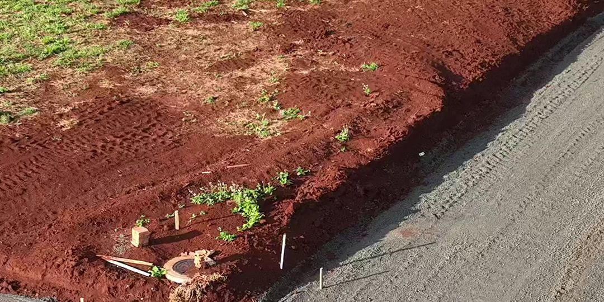

Em loteamentos e obras de saneamento, existe um momento em que a rede de esgoto simplesmente desaparece. Os poços de visita (PV) são construídos, a rua recebe a base, e semanas depois a capa asfáltica cobre tudo — inclusive o tampão. Na hora de levantar o tampão para o nível do asfalto, ou de fazer uma ligação, alguém precisa responder: onde exatamente está o poço?
Por que o PV fica enterrado sob o asfalto
A sequência normal de uma obra de infraestrutura é esta: primeiro a rede (tubulação e poços de visita), depois a base e a sub-base da rua, e por último a pavimentação. Quando a capa asfáltica é aplicada, o tampão fica embaixo dela. Depois, o PV precisa ser reaberto para o ajuste de nível.
Sem referência, isso vira tentativa: corta-se o asfalto novo onde "deveria" estar o poço, erra-se por alguns palmos, corta-se de novo. Cada erro é asfalto novo quebrado, risco de atingir a tubulação e remendo que fica para sempre na rua.
O que é o cadastro de amarração
Antes da pavimentação, o topógrafo faz o cadastro de amarração da rede: levanta o centro de cada PV com GNSS RTK e o amarra a referências fixas que vão continuar visíveis depois do asfalto — principalmente o meio-fio e as estacas da obra.
É esse cadastro que guarda o endereço exato de cada poço, mesmo depois que ele some de vista. Ele tem duas camadas de segurança:
- Coordenada GNSS do centro do PV, para relocar com o equipamento
- Amarração ao meio-fio, com distâncias medidas a partir da guia, que funcionam até com uma trena
Como é feita a locação do PV sobre o asfalto novo
- Relocação do centro — com o cadastro em mãos, a equipe volta com o GNSS RTK e loca o centro do PV sobre a pavimentação.
- Marcação no asfalto — o ponto recebe um anel de tinta spray, delimitando onde o corte deve ser feito.
- Nova amarração na guia — o ponto é amarrado de novo ao meio-fio e a guia recebe a indicação "PV ↓". Essa referência lateral sobrevive ao corte, mesmo que o primeiro golpe não caia no centro exato.
Resultado: a rua é cortada uma vez, no lugar certo. Sem furar a tubulação, sem quebrar asfalto onde não devia, sem retrabalho.
Quando contratar
O cadastro de amarração precisa ser feito antes da pavimentação. Depois que o asfalto cobre o tampão, dá para procurar o poço por outros meios, mas com muito mais custo e incerteza. Por isso vale incluir o cadastro das redes no cronograma de topografia do loteamento, junto com a locação de arruamento e meio-fio.
Vai pavimentar um loteamento?
Fazemos o cadastro de amarração das redes e a locação dos PVs com GNSS RTK e ART/CFT.
📲 Falar no WhatsApp